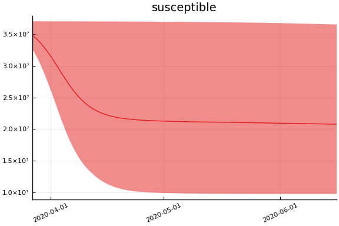
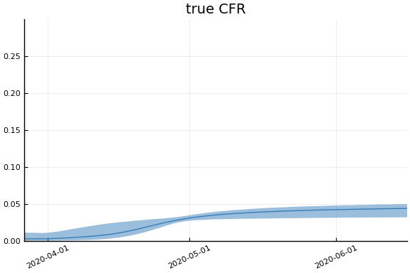
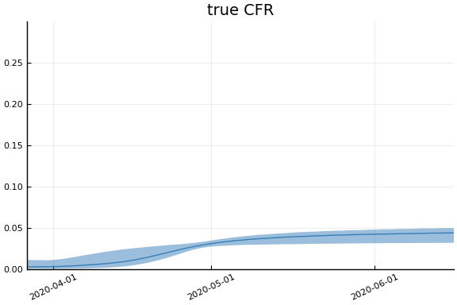

This work is licensed under a Creative Commons Attribution-ShareAlike 4.0 International License
using CovidSEIR, Plots, DataFrames, JLD2, StatsPlots
Plots.pyplot()
jmddir = normpath(joinpath(dirname(Base.find_package("CovidSEIR")),"..","docs","jmd"))
covdf = covidjhudata();
Canada¶
We estimate the model with the following code. It takes about an hour.
canada = CountryData(covdf, "Canada");
using Turing
canmod = CovidSEIR.TimeVarying.countrymodel(canada)
cc = Turing.psample(canmod, NUTS(0.65), 5000, 4)
import JLD2
JLD2.@save "$jmddir/canada_$(Dates.today()).jld2" cc
JLD2.@load "$jmddir/canada_tv_2020-04-03.jld2" cc dayt0;
Estimates¶
plot(cc)

We can see that there might be convergence issues. There are large differences between the four chains for some parameters.
describe(cc)
2-element Array{ChainDataFrame,1}
Summary Statistics
parameters mean std naive_se mcse ess r_hat
────────── ──────── ─────── ──────── ────── ──────── ──────
a 0.3663 0.2493 0.0020 0.0162 109.8516 1.0508
pE0 0.0000 0.0000 0.0000 0.0000 69.0298 1.1447
p[1] 0.2249 0.2090 0.0017 0.0152 68.9411 1.3644
p[2] 0.0087 0.0138 0.0001 0.0011 64.2570 1.7916
sigC 87.8113 8.0934 0.0640 0.4845 137.3117 1.0642
sigD 2.9818 0.2639 0.0021 0.0146 123.8674 1.0790
sigRc 120.5234 11.2212 0.0887 0.6369 181.6979 1.0479
β[1] 0.6730 0.5646 0.0045 0.0374 85.0754 1.0638
β[2] 0.7252 0.5969 0.0047 0.0421 72.8147 1.1185
β[3] 0.8204 0.5753 0.0045 0.0354 129.0891 1.0235
γ[1] 0.3462 0.3724 0.0029 0.0264 64.2570 1.4844
γ[2] 0.0697 0.0933 0.0007 0.0072 64.2570 1.8599
ρ[1] 0.7800 0.1430 0.0011 0.0092 94.7969 1.0980
ρ[2] 62.6193 0.8948 0.0071 0.0586 82.1667 1.2138
τ 0.6859 1.1848 0.0094 0.0891 64.2570 2.3084
Quantiles
parameters 2.5% 25.0% 50.0% 75.0% 97.5%
────────── ──────── ──────── ──────── ──────── ────────
a 0.0761 0.1626 0.2850 0.5259 0.9303
pE0 0.0000 0.0000 0.0000 0.0000 0.0000
p[1] 0.0159 0.0487 0.1410 0.3693 0.7103
p[2] 0.0023 0.0024 0.0024 0.0036 0.0537
sigC 73.0827 82.2443 87.4223 92.8061 105.5131
sigD 2.4923 2.8060 2.9732 3.1460 3.5283
sigRc 100.7446 112.6183 119.6341 127.6296 144.6780
β[1] 0.0082 0.2626 0.5366 0.9317 2.1050
β[2] 0.1011 0.2765 0.5101 1.0400 2.2667
β[3] 0.0448 0.3767 0.7180 1.1543 2.1747
γ[1] 0.0012 0.0093 0.2504 0.5756 1.2408
γ[2] 0.0207 0.0242 0.0260 0.0369 0.3570
ρ[1] 0.4902 0.6719 0.7961 0.9020 0.9848
ρ[2] 60.8948 61.9923 62.6388 63.2614 64.2878
τ 0.0001 0.0007 0.0065 0.9963 3.9571
The parameter estimates are generally not very precise.
Fit¶
sdf = simtrajectories(cc, canada, 1:200)
f = plotvars(sdf, canada)
f.fit
In this figure, solid lines are observed data, dashed lines are posterior means, and the shaded region is a pointwise 90% credible interval.
Implications¶
We now look at the model’s projections for some observed and unobserved variables.
for fig in f.trajectories
display(fig)
end
 


 
 


In general we see a similar pattern as noted above: the posteriors for observed variables are fairly precise. However, the posteriors for unobserved variables, such as the portion of undetected infections and the portion of mild infections, are very imprecise.